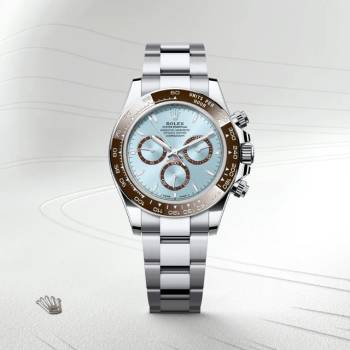

The Rolex Cosmograph Daytona is a legendary chronograph watch designed for high-performance motorsport. Introduced in 1963, it was built to meet the demands of professional racing drivers, featuring a precise tachymeter bezel and stopwatch functionality to measure average speeds. Named after the famous Daytona International Speedway in Florida, the watch quickly became an icon on and off the track. With its bold design, reliable movement, and strong ties to racing history, the Daytona is one of Rolex’s most sought-after and collectible models—especially those linked to actor and racing enthusiast Paul Newman. Today, the Rolex Daytona remains a symbol of speed, precision, and style.
